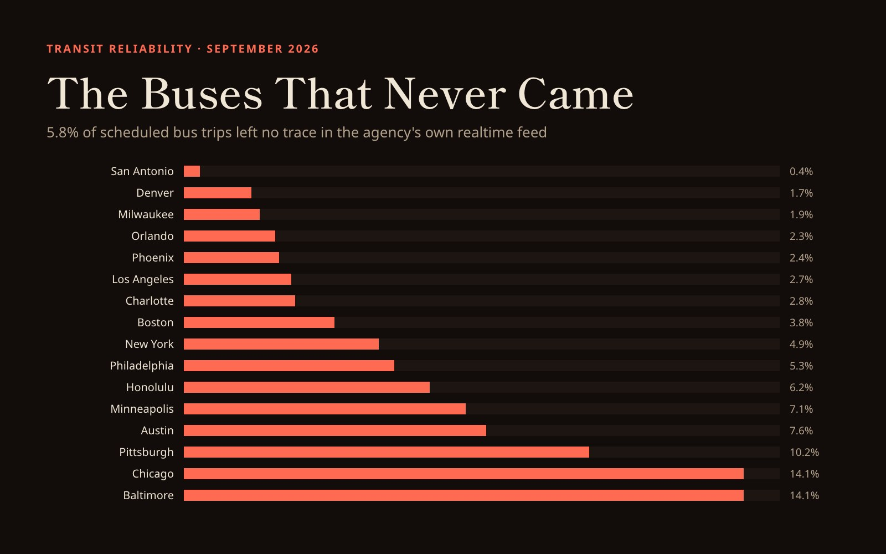

GIS that makes the overlooked undeniable.
Real maps, real data, real people who needed someone to notice. New ones posted here roughly every week.
The Buses That Never Came
A ghost bus is a trip that exists on the schedule and never appears on the street. Across sixteen US transit systems, 5.8% of scheduled bus trips left no trace in the agency's own realtime feed.

What was measured
Every transit agency publishes two things: a schedule saying which trips are supposed to run, and a realtime feed reporting where its vehicles actually are. Compare them and you can count the trips that were promised but never showed up.
From 3 to 15 September 2026 I collected vehicle positions every 90 seconds from 19 US agencies, alongside a daily snapshot of each agency's published schedule. For each service day I took the set of trips scheduled to run and checked which of them ever appeared in the realtime feed. A scheduled trip that is never seen is counted as a ghost.
That is a deliberately generous test. A trip counts as having run if it reported its position even once, so a bus that appeared for two minutes and vanished still counts as delivered. The real shortfall riders experience is larger than what follows.
The count
The spread is wide. San Antonio's VIA delivered essentially everything it promised, at 0.4%. Chicago and Baltimore sit at 14.1%, meaning roughly one scheduled trip in seven left no trace at all. The median system lands at 4.3%.
Ranking cities against each other is the obvious thing to do with this table and also the thing to be most careful about. These are not equally comparable systems: they differ in fleet size, in how much of the fleet reports, and in how their feeds behave. What the number measures cleanly is a system against itself, day to day.
| City | Agency | Clean days | Ghost rate | Weekday | Weekend |
|---|---|---|---|---|---|
| San Antonio | VIA Metropolitan Transit | 11 | 0.4% | 0.4% | 0.5% |
| Denver | RTD | 11 | 1.7% | 2.0% | 0.8% |
| Milwaukee | MCTS | 9 | 1.9% | 1.2% | 4.1% |
| Orlando | LYNX | 9 | 2.3% | 3.2% | 0.7% |
| Phoenix | Valley Metro | 11 | 2.4% | 2.7% | 1.4% |
| Los Angeles | LA Metro | 9 | 2.7% | 2.6% | 2.9% |
| Charlotte | CATS | 11 | 2.8% | 2.8% | 2.8% |
| Boston | MBTA | 11 | 3.8% | 3.4% | 4.7% |
| New York | MTA New York City Bus | 6 | 4.9% | 5.0% | 4.2% |
| Philadelphia | SEPTA | 10 | 5.3% | 5.3% | 5.5% |
| Honolulu | TheBus | 11 | 6.2% | 7.2% | 3.4% |
| Minneapolis | Metro Transit | 11 | 7.1% | 8.6% | 3.1% |
| Austin | CapMetro | 11 | 7.6% | 7.7% | 7.5% |
| Pittsburgh | PRT | 11 | 10.2% | 10.4% | 9.5% |
| Chicago | CTA | 9 | 14.1% | 13.7% | 14.7% |
| Baltimore | MTA Maryland | 9 | 14.1% | 10.8% | 20.8% |
Weekday against weekend
Most systems run better on weekends, which is less surprising than it first sounds: there is far less service scheduled, so there is more slack to deliver it. Denver, Orlando, Minneapolis and Honolulu all improve noticeably once the weekday peak disappears.
Baltimore goes the other way, and does so hard.
MTA Maryland's weekend ghost rate is 20.8% against 10.8% on weekdays, the largest weekday to weekend swing in the data. It is also built on three weekend days. I would not publish that as a finding about Baltimore yet. I am publishing it as the thing I intend to look at next.
Four ways this goes wrong
Every number above survived four tests. Each one exists because it caught something that had already produced a confident, wrong answer, and each catches a failure the others cannot see.
| Test | Threshold | What it catches | Excluded |
|---|---|---|---|
| Schedule join | join_ok ≥ 90% | Whether the two sides use the same trip identifiers at all. CTA publishes a Bus Tracker id, not a GTFS trip_id, so Chicago read as 41% realized before it was resolved on scheduled start time instead. | 3 city-days |
| Local service day | midnight to midnight, agency timezone | The collector names its files by UTC date, but a service day is local. In Honolulu that put 46% of every file in the wrong day. It hid on weekdays, because consecutive weekdays reuse trip ids, then collapsed at every Friday-to-Saturday boundary. | a correction, not an exclusion |
| Fleet coverage | ≤ 21 scheduled trips per reporting vehicle | Whether the feed publishes the whole operating fleet. MARTA reports about 276 buses against 6,918 scheduled trips, the same 187 vehicles every day. Its unobserved trips are buses that ran without reporting. | 12 city-days, all Atlanta |
| Day completeness | null trip_id < 75%, no gap over 90 minutes | Whether the day was actually captured. CapMetro spent 9 September publishing positions with no trip attached: 8.8% of rows carried a trip id, and the day scored a perfect join against 154 trips. | 22 city-days |
The Atlanta case is the one worth dwelling on, because it was almost the headline. MARTA came in at 37.4% ghost, stable across every day, with a 97.3% schedule join. Nothing in the join diagnostics objected. What gave it away was arithmetic: 6,918 scheduled trips against 276 reporting buses is 25.1 trips per vehicle, where every other system in the set falls between 3.5 and 15.0. No bus turns 25 trips in a day. MARTA's fleet is not failing to run, it is failing to report, and the two are indistinguishable from the outside unless you check.
A measurement that only has one way to be wrong is a measurement you should not trust. The timezone bug is the clearest example of why. It was invisible for the entire first pass: weekday joins sat at 99% because consecutive weekdays reuse the same trip ids, so the misattributed rows matched anyway. It only surfaced at service-type boundaries, where Friday and Saturday trip ids overlap by exactly zero.
What this does not show
It is not a punctuality measure. A trip that ran 40 minutes late and a trip that ran exactly on time are both counted as delivered. Only complete absence registers.
Reporting failures look like service failures. Atlanta was caught. A milder version of the same problem, an agency where 10% of buses do not report, would inflate that system's rate and would not trip the threshold.
Twelve days is a fortnight in September. There is no seasonal context here, no winter, no school calendar, and one of the twelve days was Labor Day.
The weekend sample is thin. Two Saturdays and one Sunday. Every weekend figure in this piece carries that qualification.
Three systems were collected but could not be measured. Atlanta for fleet under-reporting, Miami and LA Rail because neither has a schedule feed configured to compare against.
Method and data
Vehicle positions were polled every 90 seconds from each agency's GTFS-Realtime feed, or its
native API where no GTFS-RT endpoint exists. Schedules come from a daily GTFS snapshot per
agency, deduplicated by content hash, which matters because MTA and SEPTA both rolled a service
pick mid-collection and publish only the current one. A scheduled trip set is resolved from
calendar.txt and calendar_dates.txt for the local service date,
restricted to bus and trolleybus route types, and matched against distinct trip ids observed in
the local service day window including owl trips past midnight.
Collection is still running. This analysis covers 3 to 15 September 2026 and will be extended as the weekend sample deepens.
Sources
Every figure above comes from data the agencies publish themselves. Realtime endpoints are listed below with query strings removed; the feeds that require an API key were accessed with credentials held locally and not reproduced here. Static schedules were retrieved through the Mobility Database catalog, so each agency's schedule is cited by its stable catalog id rather than by a URL that moves.
| City | Agency | Realtime endpoint | Protocol | MDB id |
|---|---|---|---|---|
| San Antonio | VIA Metropolitan Transit | gtfs.viainfo.net/vehicle/vehiclepositions.pb | GTFS-RT | 2348 |
| Denver | RTD | open-data.rtd-denver.com/files/gtfs-rt/rtd/VehiclePosition.pb | GTFS-RT | 178 |
| Milwaukee | MCTS | realtime.ridemcts.com/gtfsrt/vehicles | GTFS-RT | 2127 |
| Orlando | LYNX | gtfsrt.golynx.com/gtfsrt/GTFS_VehiclePositions.pb | GTFS-RT | 347 |
| Phoenix | Valley Metro | mna.mecatran.com/utw/ws/gtfsfeed/vehicles/valleymetro | GTFS-RT | 147 |
| Los Angeles | LA Metro | api.goswift.ly/real-time/lametro/gtfs-rt-vehicle-positions | GTFS-RT | 29 |
| Charlotte | CATS | gtfsrealtime.ridetransit.org/GTFSRealTime/Vehicle/VehiclePositions.pb | GTFS-RT | 2265 |
| Boston | MBTA | cdn.mbta.com/realtime/VehiclePositions.pb | GTFS-RT | 437 |
| New York | MTA New York City Bus | gtfsrt.prod.obanyc.com/vehiclePositions | GTFS-RT | 510, 512, 513, 514, 520, 528 |
| Philadelphia | SEPTA | www3.septa.org/gtfsrt/septa-pa-us/Vehicle/rtVehiclePosition.pb | GTFS-RT | 502 |
| Honolulu | TheBus | api.thebus.org/arrivalsJSON/ | TheBus API | 2350 |
| Minneapolis | Metro Transit | svc.metrotransit.org/mtgtfs/vehiclepositions.pb | GTFS-RT | 205 |
| Austin | CapMetro | data.texas.gov/download/eiei-9rpf | GTFS-RT | 150 |
| Pittsburgh | PRT | truetime.portauthority.org/gtfsrt-bus/vehicles | GTFS-RT | 409 |
| Chicago | CTA | ctabustracker.com/bustime/api/v3/getvehicles | CTA Bus Tracker | 389 |
| Baltimore | MTA Maryland | api.goswift.ly/real-time/mta-maryland/gtfs-rt-vehicle-positions | GTFS-RT | 466 |
Collected but not counted
These three systems were polled on the same schedule as the rest and are excluded from every figure in this piece.
| City | Agency | Realtime endpoint | MDB id | Why it is excluded |
|---|---|---|---|---|
| Atlanta | MARTA | gtfs-rt.itsmarta.com/TMGTFSRealTimeWebService/vehicle/vehiclepositions | 368 | Fleet under-reporting: 25.1 scheduled trips per reporting vehicle. |
| Miami | Miami-Dade Transit | api.goswift.ly/real-time/miami/gtfs-rt-vehicle-positions | none | No static schedule feed configured, so nothing to compare against. |
| Los Angeles rail | LA Metro rail | api.goswift.ly/real-time/lametro-rail/gtfs-rt-vehicle-positions | none | No static schedule feed configured. |
Software
Collection and analysis were written in Python with DuckDB for the schedule joins. Schedules are parsed from the GTFS static specification; realtime feeds are parsed as GTFS-Realtime protocol buffers except where noted above.
The collectors, the schedule snapshotter and the analysis are all in the repo, along with the four validity tests and the per-day results this page is built from. Credentials are read from an untracked .env file; the 13 agencies that need no key run out of the box.
View the code (opens in a new tab)